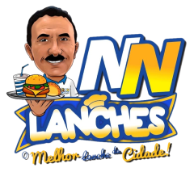

Bem-vindo ao NN Lanches
Esta é a página oficial do Aplicativo NN Lanches
Sobre o Aplicativo
O Aplicativo NN Lanches é uma solução inovadora e pioneira dentro da cidade de Dona Inês que permite os clientes locais na lanchonete NN Lanches, realizem seus pedidos forma mais simples e rápida utilizando o mensageiro WhatsApp para enviar o pedido.
Por que escolher o Aplicativo NN Lanches?
- O Aplicativo NN Lanches torna mais fácil a realização de pedidos através do cardápio digital categorizado entre: Lanches, Congelados e Bebidas.
- Muitas lanchonetes na cidade de Dona Inês, utiliza o mensageiro instantâneo WhatsApp para realizar pedidos, porém todos os pedidos são feitos por texto subjetivo ou por áudio. Com isso, tornasse demorado a conclusão do pedido, além do que o cliente não sabe o preço dos itens e também não tem a lista de itens disponível. Com o Aplicativo NN Lanches, os itens estão visualmente disponíveis e com seus respectivos preços, apena com alguns cliques na tela do celular é possível realizar um pedido complento em alguns minutos ou segundos.
- A NN Lanches inova na cidade de Dona Inês - PB Sendo a primeira lanchonete à ter seu aplicativo próprio, melhorando a experiência do usuário com relação aos seus serviços.
Como começar?
Para começar a utilizar o Aplicativo NN Lanches, basta seguir os seguintes passos:
- Faça download do aplicativo WhatsApp na Play Store caso não tenha ainda (o WhatsApp é usado para envio dos pedidos do App da NN Lanches), em seguida ainda na Play Store faça download do Aplicativo da NN Lanches.
- Siga as etapas de registro do seu número de telefone celular no WhatsApp caso não tenha conta, depois abra o aplicativo NN Lanches e informe os seus dados para entrega do pedido.
- Após todos os registros, selecione os itens que deseja pedir, clicando no botão [adicionar a sacola], depois clique no icone da sacola no canto superior direito da tela, verifique todos os itens adicionado a sacola, clique no canto inferior da tela para ir para a tela de pagamento, selecione o tipo de pagamento que deseja. Após isso, será aberto o aplicativo WhatsApp com o contato da NN Lanches e com o seu pedido escrito na mensagem, para finalizar o pedido é só enviar a mensagem.
Política de Privacidade do Aplicativo NN Lanches
Conheça as políticas de privacidades do Aplicativo NN Lanches no link: https://nnlanches.github.io/privacy_policy.html.
Entre em Contato
Se tiver alguma dúvida ou precisar de suporte, entre em contato conosco através de marcosferreira.developer@gmail.com.